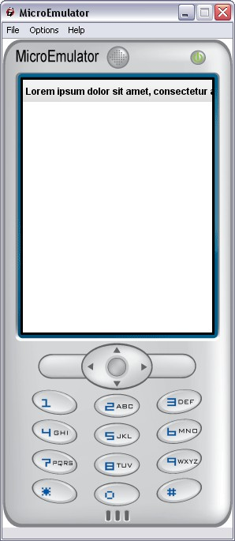

Title prototype

Display a title bar.
Title text scroll if it too long (Title prototype use a Ticker).
Data fields
- MFString title - Title content, hidden if titleColor field is set
Style fields
- MFString images - Background image of the title
- SFVec2f screenSize - Size of the screen where the application is displayed
- SFVec2f textScale - Use for scaling text if necessary (phone with small fonts)
- MFString style - Style to use for this prototype (Default: Title)
Warning:
Define style is required (we can use the default style - see
Style node).
Ticker